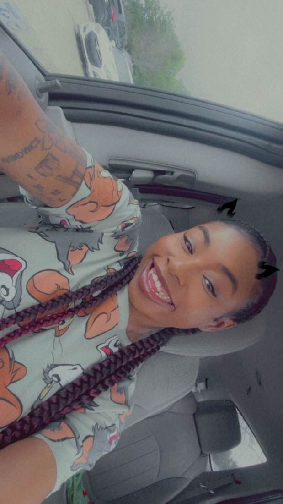

Welcome to My Website
My name is Keilah Williams, and this website is a small creative space that shows the things I love most. I enjoy art, cooking, music, traveling, and learning more about people through psychology.
"Creativity is how I express myself, relax, and bring color into everyday life."
Art
Acrylic painting is my favorite form of artistic expression because it lets me be bold and colorful.
Cooking
I love cooking because food brings people together and gives me room to be creative.
Music
Music helps me focus, relax, and match whatever mood I am in.
Quick Facts About Me
| Category | Details |
|---|---|
| Major | Psychology |
| Minor | Criminal Justice |
| Job | Manager at Raising Cane's |
| Favorite Color | Yellow |
| Home State | Louisiana |
Music Inspiration
This video represents my love for music and creative energy.